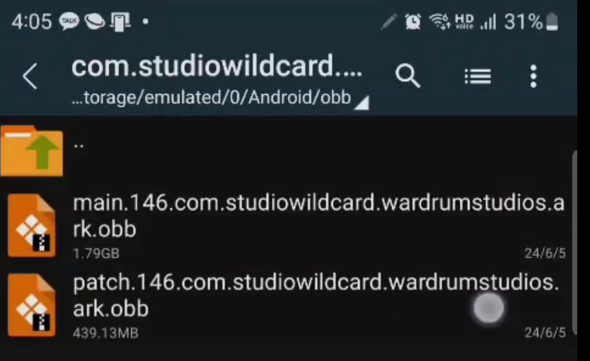
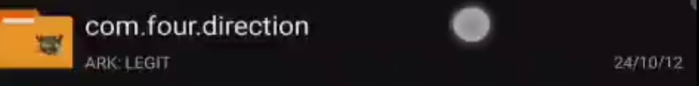
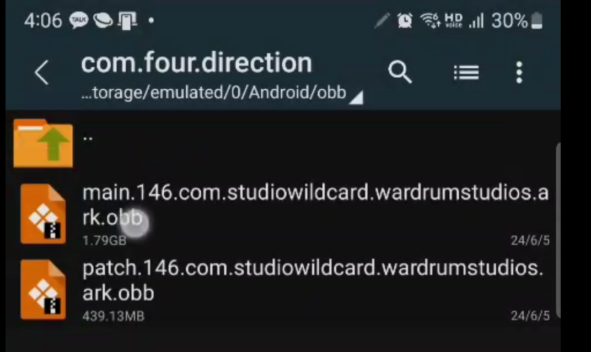
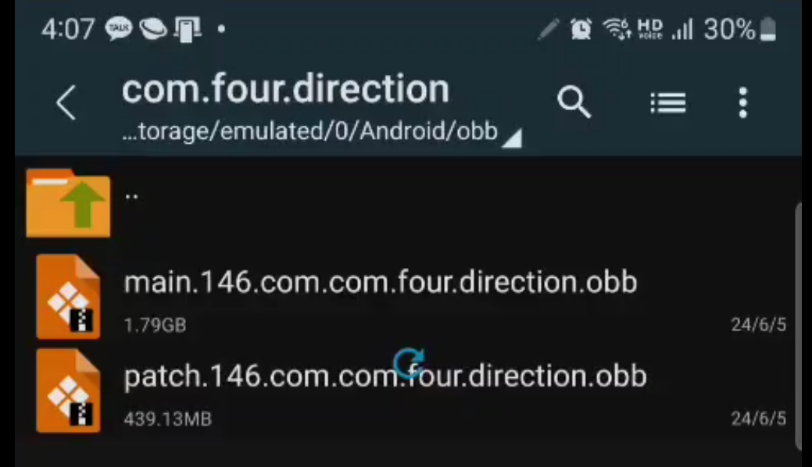

그럼 com.studiowlidcard.wardrumstudios.ar뭐시기라고 하면서 아크 이미지 걸려 있는 파일에 들어가 줍니다.

그럼 여기에 이렇게 2가지의 obb 파일이 있을 건데 저 파일들을 복사를 해서

이 파일안에 붙혀넣기를 해줍니다

그럼 시간은 꽤 걸리지만 이렇게 복사가 완료가 됬다면

[main.150.com.studiowildcard.wardrumstudios.ark.obb]이라고 하는 것을
[main.150.com.four.direction.obb] 이라고 변경을 해줍니다
그리고 다른 파일도
[patch.150.com.studiowildcard.wardrumstudios.ark.obb]이라고 하는 것을
[patch.150.com.four.direction.obb] 이라고 변경을 해주면 끝 입니다.